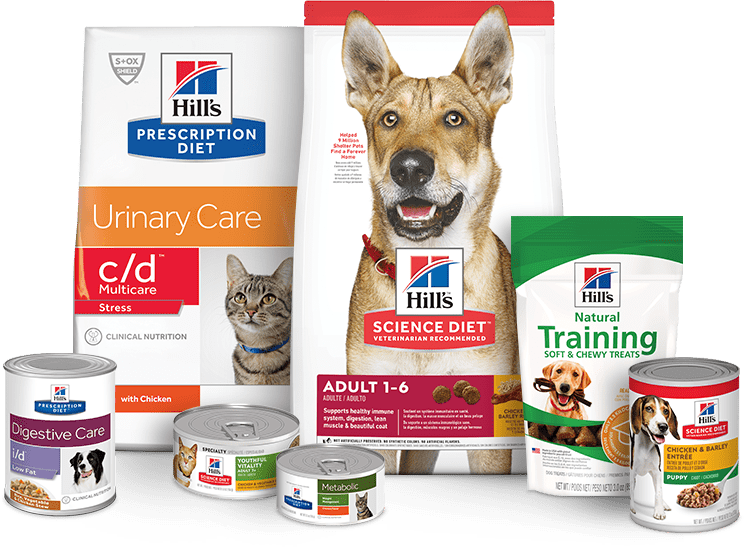

THE HILLS
The Hills company is known to be one of the top leading American brands for animal food.
It was founded by Burton Hill in 1907. They offer a wide variety of foods for both cats and dog. Specifically for dogs
they offer many diffrent breed specific food.
Thier food standards are held to the expextations of human food.They belive in the best nutrition for your pet so they can live a healthy lifestyle. One reason as why I really like this company is that they also help feed shelter pets in North America.
You can pick up The Hill's treats and food for your pet at your local PetsMart, Petco, as well as online.